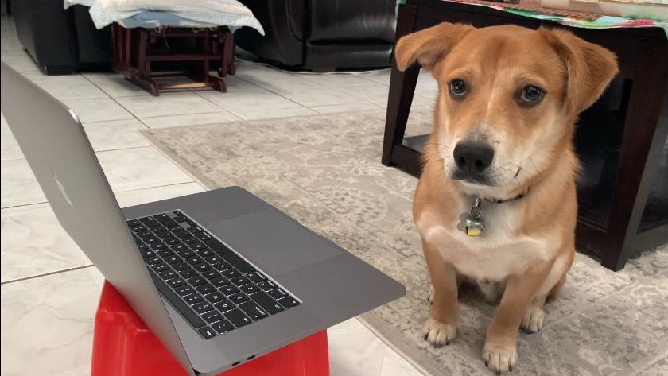

Navigation
Click on the tab to choose the corresponding kana you would like to study.
Inside of the tab, you will find the table of kana To study a specific kana, click on it.
Once you have clicked on it, a scroll will pop up, allowing you to draw on it and follow the tracing lines.
Alternate Kana
To study the alternate kana's, for example like が and だ.
Click on the が or ガ button on the top right of the table.
This will transition the table into the alternate kana mode.
This alternate table functions exactly like the regular one.
Inside of the Page
Click on the undo button if you made a mistake and want to undo a line.
Click on the clear button if you would like to erase your writing.
Finally, once you are done, you can click on the "X" in the top right corner of the scroll to exit out of the page.
Quizzing
There are multiple ways to quiz.
If you would like to quiz on a specific column of kana, then click on the english letter corresponding to that column which is on top.
If you would like to quiz on a specific row of kana, then click on the english letter corresponding to that row which is on the right.
Finally, if you would like to quiz all of the hiragana or katakana, then click on the quiz all button, located on the top left.
If you have used the kanji site, then you would have noticed that quizzing here is different.
When you quiz, you are only shown the correct answer when the quiz is finished.
Your drawing and the correct drawing will be shown on top of each other so you can check your work.
To view your results at the end of the quiz, hit the right arrow again to view the results.
- Right Arrow Keys Go to Next Question
- Esc Key Exit Page
- C Key or Backspace Clear Page
- Z Key Undo
Hello Again!
Hello!
This website was developed by Kenneth Le. At the time of this website's creation, I'm a sophomore at UT Austin taking 610D Japanese. I made this website to assist students learning Japanese. Hiragana and Katakana are the core basics of Japanese. You will need to be able to recognize it immediately. I hope this website will help you learn!
If you run into any bugs, or if you have any suggestions about anything I should add to the website then please email me! Any sort of feedback would be great, if you think that adding some functions would help convenience or help the learning process, then please, email me. My email is lekenneth77@gmail.com
Special thanks to Cooke-Sensei, Suito-Sensei, the rest of the UT Japanese Department, and you!
ありがとう！
がんばって！！！
